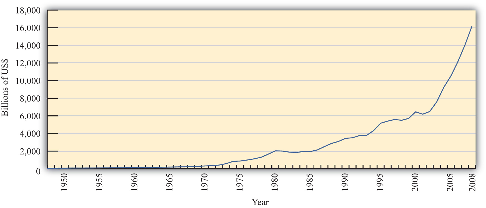
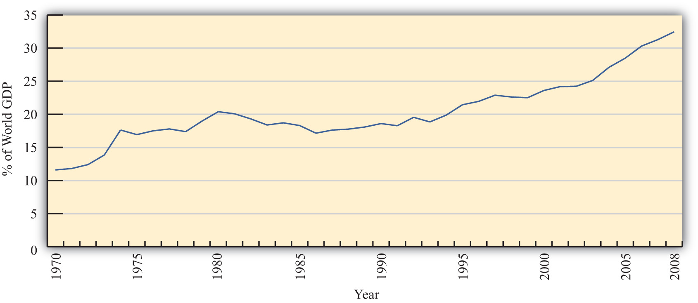

International economics is growing in importance as a field of study because of the rapid integration of international economic markets. Increasingly, businesses, consumers, and governments realize that their lives are affected not only by what goes on in their own town, state, or country but also by what is happening around the world. Consumers can walk into their local shops today and buy goods and services from all over the world. Local businesses must compete with these foreign products. However, many of these same businesses also have new opportunities to expand their markets by selling to a multitude of consumers in other countries. The advance of telecommunications is also rapidly reducing the cost of providing services internationally, while the Internet will assuredly change the nature of many products and services as it expands markets even further.
One simple way to see the rising importance of international economics is to look at the growth of exports in the world during the past fifty or more years. Figure 1.1 "World Exports, 1948–2008 (in Billions of U.S. Dollars)" shows the overall annual exports measured in billions of U.S. dollars from 1948 to 2008. Recognizing that one country’s exports are another country’s imports, one can see the exponential growth in outflows and inflows during the past fifty years.
Figure 1.1 World Exports, 1948–2008 (in Billions of U.S. Dollars)
Source: World Trade Organization, International trade and tariff data, http://www.wto.org/english/res_e/statis_e/statis_e.htm.
However, rapid growth in the value of exports does not necessarily indicate that trade is becoming more important. A better method is to look at the share of traded goods in relation to the size of the world economy. Figure 1.2 "World Exports, 1970–2008 (Percentage of World GDP)" shows world exports as a percentage of the world gross domestic product (GDP) for the years 1970 to 2008. It shows a steady increase in trade as a share of the size of the world economy. World exports grew from just over 10 percent of the GDP in 1970 to over 30 percent by 2008. Thus trade is not only rising rapidly in absolute terms; it is becoming relatively more important too.
Figure 1.2 World Exports, 1970–2008 (Percentage of World GDP)
Source: IMF World Economic Outlook Database, http://www.imf.org/external/pubs/ft/weo/2009/02/weodata/index.aspx.
One other indicator of world interconnectedness can be seen in changes in the amount of foreign direct investment (FDI). FDI is foreign ownership of productive activities and thus is another way in which foreign economic influence can affect a country. Figure 1.3 "World Inward FDI Stocks, 1980–2007 (Percentage of World GDP)" shows the stock, or the sum total value, of FDI around the world taken as a percentage of the world GDP between 1980 and 2007. It gives an indication of the importance of foreign ownership and influence around the world. As can be seen, the share of FDI has grown dramatically from around 5 percent of the world GDP in 1980 to over 25 percent of the GDP just twenty-five years later.
Figure 1.3 World Inward FDI Stocks, 1980–2007 (Percentage of World GDP)

Source: IMF World Economic Outlook Database, http://www.imf.org/external/pubs/ft/weo/2009/02/weodata/index.aspx; UNCTAD, FDI Statistics: Division on Investment and Enterprise, http://www.unctad.org/Templates/Page.asp?intItemID=4979&lang=1.
The growth of international trade and investment has been stimulated partly by the steady decline of trade barriers since the Great Depression of the 1930s. In the post–World War II era, the General Agreement on Tariffs and TradeAn international agreement among countries, established in 1948, promoting trade liberalization through the reduction of tariff rates and other barriers to trade until its conversion to the WTO in 1995., or GATT, prompted regular negotiations among a growing body of members to reciprocally reduce tariffs (import taxes) on imported goods. During each of these regular negotiations (eight of these rounds were completed between 1948 and 1994), countries promised to reduce their tariffs on imports in exchange for concessions—that means tariffs reductions—by other GATT members. When the Uruguay RoundThe eighth and last round of GATT trade liberalization negotiations that substantially expanded the number and scope of trade liberalization agreements and established the WTO., the most recently completed round, was finalized in 1994, the member countries succeeded in extending the agreement to include liberalization promises in a much larger sphere of influence. Now countries not only would lower tariffs on goods trade but also would begin to liberalize the agriculture and services markets. They would eliminate the many quota systems—like the multifiber agreement in clothing—that had sprouted up in previous decades. And they would agree to adhere to certain minimum standards to protect intellectual property rights such as patents, trademarks, and copyrights. The World Trade Organization (WTO)An international agency whose purpose is to monitor and enforce the Uruguay Round trade liberalization agreements and to promote continuing liberalizing initiatives with continuing rounds of negotiation. was created to manage this system of new agreements, to provide a forum for regular discussion of trade matters, and to implement a well-defined process for settling trade disputes that might arise among countries.
As of 2009, 153 countries were members of the WTO “trade liberalization club,” and many more countries were still negotiating entry. As the club grows to include more members—and if the latest round of trade liberalization talks, called the Doha Round, concludes with an agreement—world markets will become increasingly open to trade and investment.Note that the Doha Round of discussions was begun in 2001 and remains uncompleted as of 2009.
Another international push for trade liberalization has come in the form of regional free trade agreements. Over two hundred regional trade agreements around the world have been notified, or announced, to the WTO. Many countries have negotiated these agreements with neighboring countries or major trading partners to promote even faster trade liberalization. In part, these have arisen because of the slow, plodding pace of liberalization under the GATT/WTO. In part, the regional trade agreements have occurred because countries have wished to promote interdependence and connectedness with important economic or strategic trade partners. In any case, the phenomenon serves to open international markets even further than achieved in the WTO.
These changes in economic patterns and the trend toward ever-increasing openness are an important aspect of the more exhaustive phenomenon known as globalization. Globalization more formally refers to the economic, social, cultural, or environmental changes that tend to interconnect peoples around the world. Since the economic aspects of globalization are certainly the most pervasive of these changes, it is increasingly important to understand the implications of a global marketplace on consumers, businesses, and governments. That is where the study of international economics begins.
International economics is a field of study that assesses the implications of international trade, international investment, and international borrowing and lending. There are two broad subfields within the discipline: international trade and international finance.
International trade is a field in economics that applies microeconomic models to help understand the international economy. Its content includes basic supply-and-demand analysis of international markets; firm and consumer behavior; perfectly competitive, oligopolistic, and monopolistic market structures; and the effects of market distortions. The typical course describes economic relationships among consumers, firms, factory owners, and the government.
The objective of an international trade course is to understand the effects of international trade on individuals and businesses and the effects of changes in trade policies and other economic conditions. The course develops arguments that support a free trade policy as well as arguments that support various types of protectionist policies. By the end of the course, students should better understand the centuries-old controversy between free trade and protectionism.
International finance applies macroeconomic models to help understand the international economy. Its focus is on the interrelationships among aggregate economic variables such as GDP, unemployment rates, inflation rates, trade balances, exchange rates, interest rates, and so on. This field expands basic macroeconomics to include international exchanges. Its focus is on the significance of trade imbalances, the determinants of exchange rates, and the aggregate effects of government monetary and fiscal policies. The pros and cons of fixed versus floating exchange rate systems are among the important issues addressed.
This international trade textbook begins in this chapter by discussing current and past issues and controversies relating to microeconomic trends and policies. We will highlight past trends both in implementing policies that restrict trade and in forging agreements to reduce trade barriers. It is these real-world issues that make the theory of international trade worth studying.
Jeopardy Questions. As in the popular television game show, you are given an answer to a question and you must respond with the question. For example, if the answer is “a tax on imports,” then the correct question is “What is a tariff?”